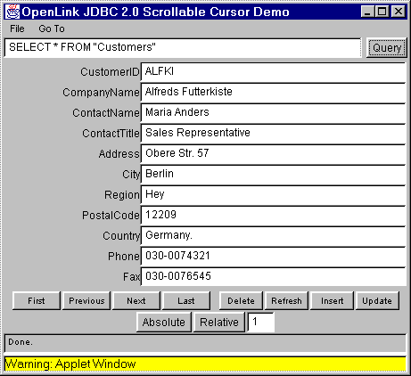

This is a demonstration of an applet using OpenLink Software's JDBC(tm) 2.0 Driver with the JDBC 2.0 specification.
When the Web browser has finished loading the Java applet, a window containing the JDBC applet will appear:
When it is running, click on the "Query" button to execute a SQL query against the default connection URL. If successful, you should see the first row of the resultset filling the applet window:

Click on the "Next" button to retrieve the next row, "Previous" to go back a row, "First" to move directly to the first row, and "Last" to move to the last row.
Clicking "Delete" will attempt to delete the row from the database. Clicking on "Refresh" will now retrieve the latest values from the database to refresh the row. However this may or may not be successful dependent on the restrictions place on the resultset by the underlying database.
"Insert" will attempt to insert the current values as a new row, and "Update" will update the current row with the values in the applet, which again, may or may not be successful, dependent on the restrictions of the underlying database.
To move to a particular position in the resultset, enter that position into the edit box and click the "Absolute" button.
The "Relative" button wil move the cursor position forwards or backwards by the number of rows specified in the edit box. To move backwards, enter a negative number.
To change the connection URL, select "File|Set Connection URL.." from the menu. A dialog box will appear enabling you to change the connection URL, as well as the driver to use:

Please note that due to the applet security restrictions, it is only possible to connect to the same server host as the Web server.